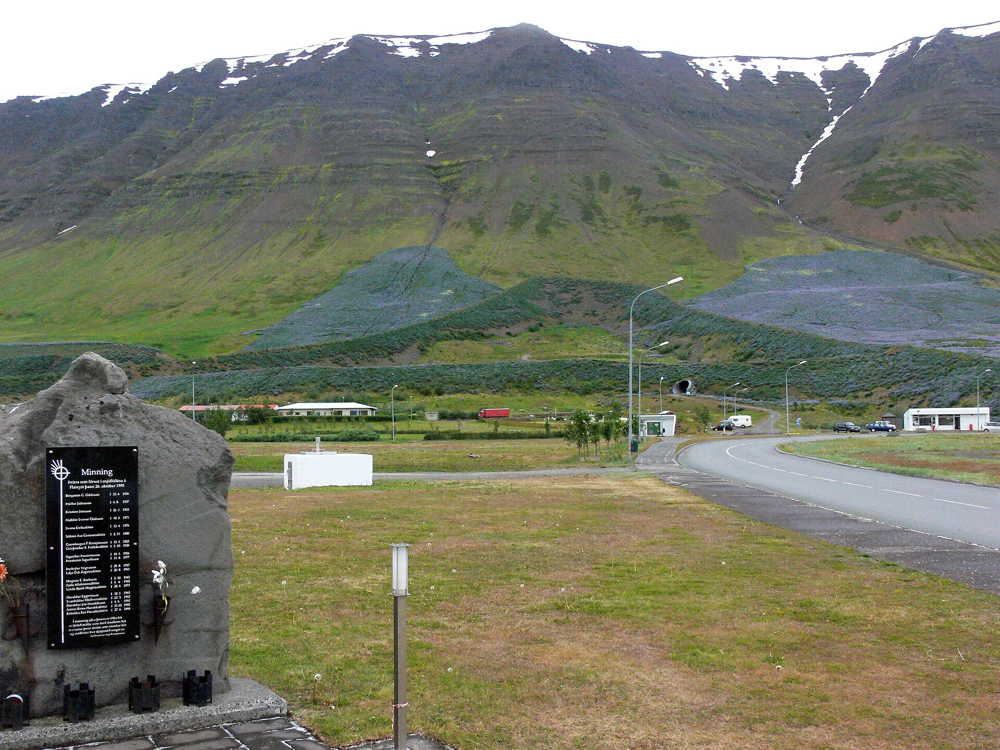
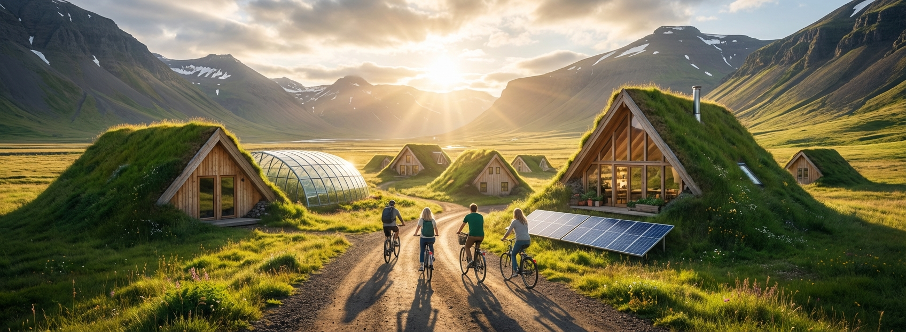

Healing People — Healing the Planet
A training course in Iceland's Westfjords exploring how caring for ourselves and caring for the planet can strengthen one another.

Flateyri · Christian Bickel / CC BY-SA 2.0 DEAbout the project
Hosted by Circa in the small Westfjords village of Flateyri, Healing People — Healing the Planet brought seventeen participants from five organisations together to ask a deceptively simple question: what if looking after ourselves and looking after the planet were the same work?
The course wove reflection and peer learning together with time in nature, designing a holistic learning experience rather than a classroom one. Participants stepped out of routine and into the landscape — connecting personal well-being with environmental care in a place where the two are impossible to separate.
Highlights
- Reflection and peer learning on well-being and sustainability
- A visit to a sustainable farm
- Nature-based activities in the Westfjords
- A group hike near Ísafjörður
Gallery
